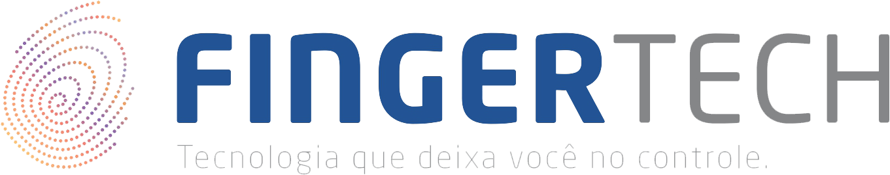

Serviço Fingertech Web
Exemplo para Captura de Impressão Digital - SDK Nitgen
Saída dos Métodos (Template)
Informações
- Capture: Obtêm a impressão digital de um único dedo, por usuário.
- Enroll: Obtêm a impressão digital de um ou mais dedos, por usuário.
- Comparar: Permite realizar a comparação do último template registrado, com uma nova impressão digital a ser capturada. Se você utilizou o método "Enroll" você poderá comparar a nova impressão digital, com qualquer dedo regitrado anteriormente.